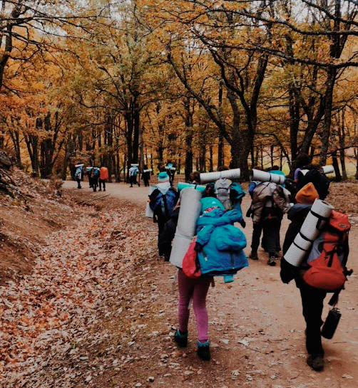
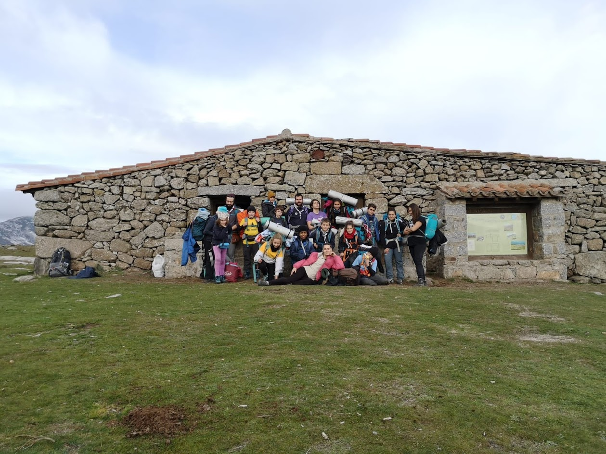

¿QUÉ ES LA TROPA?
Lema
¡Siempre listos!
Es un recordatorio de que la Ley y la Promesa son cosas reales, y que se debe estar dispuesto a ofrecer nuestra ayuda a los demás.
La Tropa Scout es la Sección de jóvenes con edades comprendidas entre los 11 y 14 años. Es una etapa crucial en la vida scout, pues es el periodo de afirmación de uno mismo; donde la idea de aventura es mas patente, se desarrolla el caracter y la actitud a través de la convivencia, enriqueciendo como persona y potenciando el compromiso con los demás.
 La Sección Scout permite explorarse a uno mismo y descubrir el mundo que nos rodea, a través de actividades realizadas en contacto con la naturaleza, la capacidad para asumir responsabilidades y admitir las criticas constructivas, participando en la dinámica de la Sección.
El marco simbólico de la Sección Scout es el “Sistema de Patrullas”.
El Sistema de Patrullas es la base estructural de la Sección que motiva a cada Scout a impulsar su propio desarrollo personal al sentirse miembro de un grupo reducido (la pandilla), que posee identidad propia.
Dentro del grupo de chicos y chicas que constituyen la Patrulla y en torno a la simbología de ella, se genera un sentido de unidad, no sólo de trabajo, sino de amistad y cooperación. Esto, enmarcado dentro de la Ley Scout y la Promesa, junto con las tradiciones que ellos mismos generan, hacen que de su forma de hacer y actuar nazca un estilo propio. Ese estilo genera un espíritu afín a todos los miembros que constituye el “Espíritu de Patrulla”.
Este espíritu no solo identifica y distingue unas Patrullas de otras, sino que también las diferencia de cualquier otro grupo de niños que no pertenezca al Movimiento Scout.
La idea educativa que persigue el Sistema de Patrullas es la de dar un marco de responsabilidad a todos los Scouts que componen este grupo natural de chicos y chicas. Deben aprender a tener pequeñas responsabilidades dentro de su grupo de iguales, para sentirse útiles y valorados dentro de su Patrulla.
Así, será necesaria la elección de un/a Guía de Patrulla, que vele por el buen funcionamiento de ésta. Ésta elección será democrática dentro de la Patrulla. Sería recomendable que el/la guía reuniera determinadas características, cómo tener una experiencia básica en la Tropa Scout, encontrarse en la etapa de animación, etc. No obstante, es más importante que cuente con el apoyo de la Patrulla.
Color
El color identificativo de la Tropa es el verde. Es el color del tallo, que crecerá hasta altas cotas.